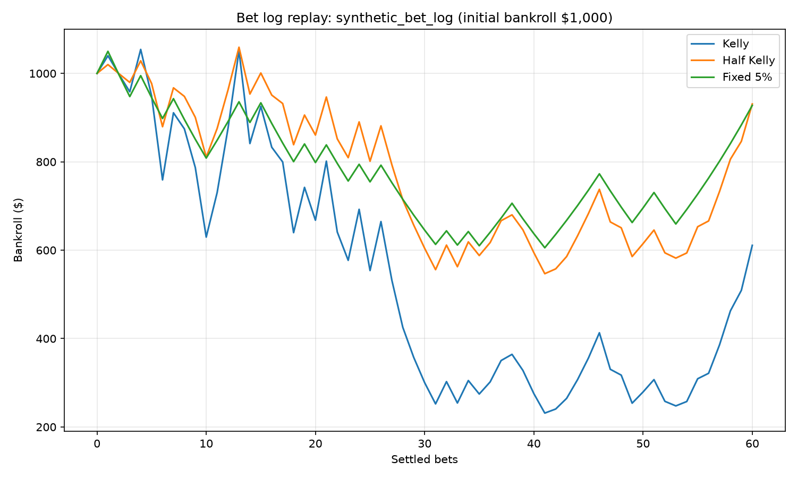

Replay a recorded bet log¶
examples/replay_bet_log.py takes a chronological CSV of probability estimates
and recorded outcomes, replays the same bets through Kelly, Half Kelly and
Fixed Fraction (5%), then reduces each history
with summarize_history(). Each strategy gets a fresh $1,000
bankroll, with all funds bettable and no per-transaction loss cap.
Warning
The committed log is synthetic, generated once with Python’s
random.Random(140). It is one illustrative path, not evidence of an edge,
a forecast, or a strategy recommendation. Keeks is educational only and
does not provide financial advice. Replaying your own estimates does not
establish that those estimates are calibrated or predict future results.
Input format¶
The committed examples/data/synthetic_bet_log.csv starts with:
probability,outcome
0.52,1
0.52,0
0.52,0
0.55,1
0.55,0
probability is the estimate made before the outcome was known, in
[0, 1]. outcome is an integer: 1 for a win, 0 for a loss.
Keep rows in their original order: reversing them changes drawdown and can
change sizing when bankroll safeguards bind. The data README records the
fixed-seed generation recipe; no generator runs during replay.
This example assumes the same even-money odds for every row: net profit of
1 unit per unit staked on a win, loss of 1 on a loss. Both the strategies’
transaction_cost_rate (per unit) and the simulator’s fee_per_bet
(flat currency fee per settlement) are zero. Adapt these controls together
when using your own log; this script does not model changing odds per row.
Reading the comparison¶


All three strategies replay the same recorded outcomes without drawing random numbers. Kelly’s larger stakes produce deeper losses on this path.¶
strategy |
input_rows |
bets |
start |
end |
total_return |
geometric_growth_per_period |
max_drawdown |
ruined |
|---|---|---|---|---|---|---|---|---|
Kelly |
60 |
60 |
1000.0 |
610.96 |
-0.38903999999999994 |
-0.008178436261167654 |
0.7805768701804972 |
False |
Half Kelly |
60 |
60 |
1000.0 |
930.98 |
-0.06901999999999997 |
-0.0011912479703595213 |
0.48380001132866346 |
False |
Fixed 5% |
60 |
60 |
1000.0 |
927.65 |
-0.07235000000000003 |
-0.001250896517715594 |
0.42332380952380955 |
False |
The CSV reports input rows separately from bets: history records
transactions, so skipped bets do not add entries. The plot’s horizontal axis
also counts settled bets, rather than input rows. All 60 rows settle for each
strategy in this fixture. Kelly and Half Kelly vary stakes with the estimated
edge; Fixed 5% stakes a constant fraction when probability meets its default
0.5 threshold.
max_drawdown is the largest fractional loss from a running peak (0.78 means
about 78%), not a single-bet loss limit. total_return is end / start - 1;
geometric_growth_per_period compounds over recorded settlements, not days
or years. Undefined metrics are blank in the CSV, rather than invented zeros.
These are summaries of one path, not averages over repeated simulations.
Reproducing it and using your own log¶
From a repository checkout with development dependencies installed:
uv run python examples/replay_bet_log.py
# Or run the examples group:
make examples
The script writes examples/output/replay_bet_log.csv and
examples/output/replay_bet_log.png using a headless matplotlib backend.
Rerunning with the same input produces byte-identical CSV.
To compare your own chronological CSV with the same odds assumptions:
uv run python examples/replay_bet_log.py /path/to/my_bets.csv
This overwrites the two example outputs; keep your personal log and generated results out of version control. The complete loading, replay and summary code is in replay_bet_log.py.